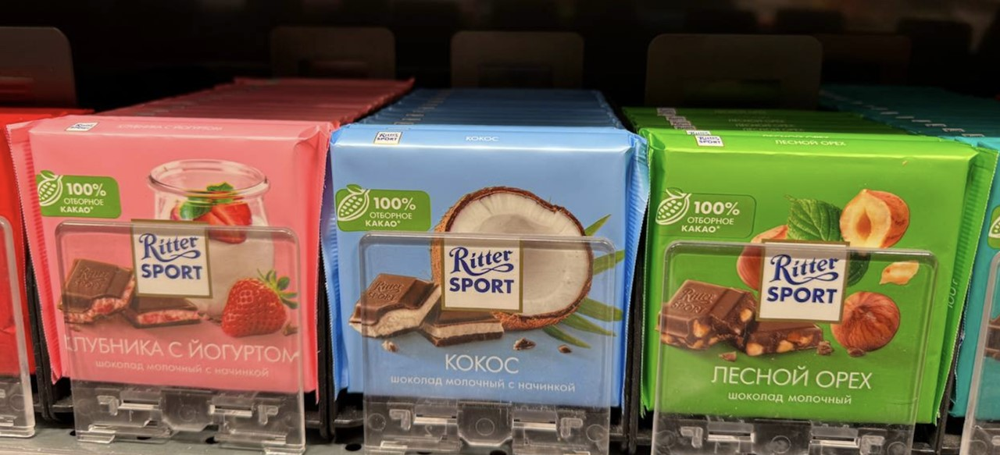
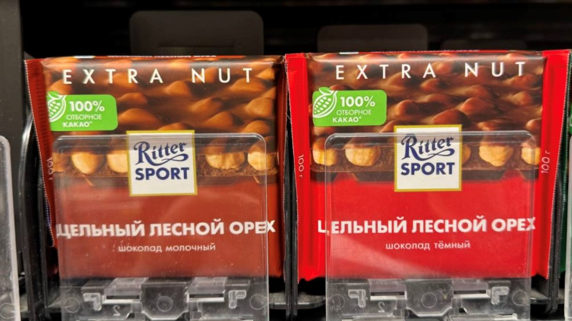
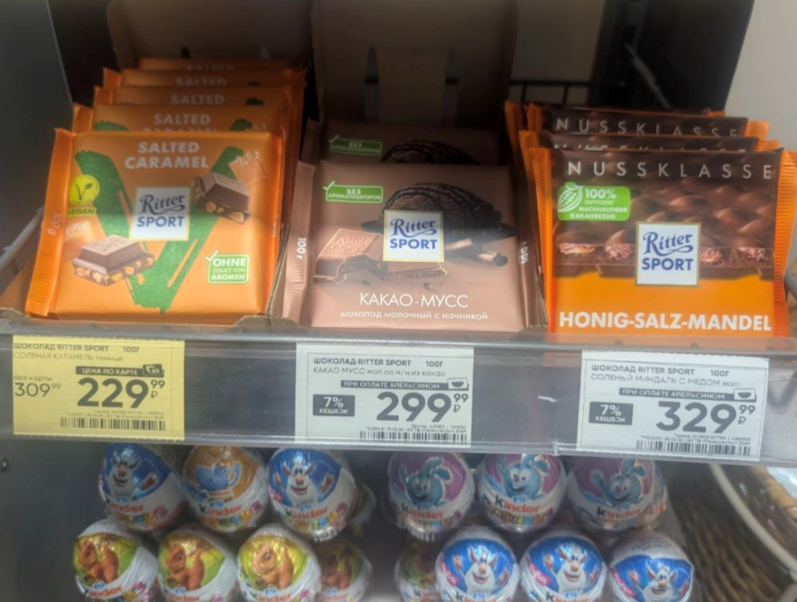
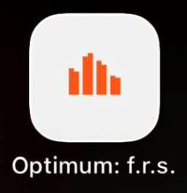
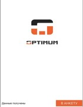
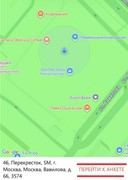
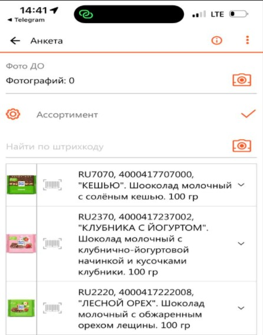
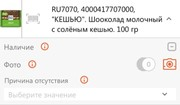
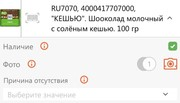

Эта статья — твой помощник для первой и не только первой смены мерчендайзинга.
Мерчендайзинг — это про то, как товар выглядит и живет в магазине: стоит ли он на виду, есть ли вообще в наличии, правильна ли цена, что со сроками годности и насколько легко его увидеть и взять с полки.
Мерчендайзер — это человек, который превращает «вроде бы завезенный товар» в реальные продажи: наводит порядок на полке, разбирается с остатками товара и помогает магазину не терять деньги. В магазине ты — человек, от которого зависит, заметит ли покупатель товар.
Фейсинг — одна «лицевая» единица товара на полке; три плитки Ritter Sport стоят рядом в одну линию — значит, у тебя три фейсинга в ширину (глубина не считается).

SKU ("эс-ка-ю") — отдельная позиция: вкус + размер + упаковка; у Ritter Sport много разных SKU, и задача мерчендайзера — не потерять ни один важный в категории.
ОМП (основное место продаж) — «родная» полка шоколада, где его много. Обычно находится в магазине в отделе "Сладости".
ДМП (дополнительное место продаж) — всё, где может ещё стоять шоколад в зале.
Золотая полка — зона на уровне глаз/рук (примерно 120–150 см от пола), где люди чаще всего берут товар.
Мёртвая зона — начало и конец стеллажа по 30–35 см, полки сильно наверху и сильно внизу.
OOS (Out of Stock) — когда товара нет на полке, хотя он должен быть.
Виртуальные остатки — товар числится в системе, но физически его нет ни на полке, ни на складе.


Гипермаркеты: Найди служебный вход. Если зашел через торговый зал — обязательно найди служебное помещение, чтобы отметиться.
Супермаркеты: отметься на охране у входа в торговый зал.
Представься и запишись как мерчендайзер для Ritter Sport от «Яндекс Смены».
«Здравствуйте, меня зовут <имя>, я по заданию сервиса "Яндекс Смена", выкладка шоколада Ritter Sport. Подскажите, пожалуйста, к кому обратиться по залу и складу?»
Подходишь к категории шоколада (Отдел кондитерских изделий) и ищешь блок Ritter Sport на основном месте продаж.



Собираешь Ritter Sport в единый блок в категории, по возможности в центре «поля зрения» — районе "золотой" полки.
Проверяешь сроки годности и делаешь ротацию.
Проверяешь, чтобы под каждым SKU Ritter Sport был корректный ценник.

Классическая картина виртуального остатка: товар «живет в системе», но не живёт на полке.

Качественно выполненное задание — это ровный брендблок, заполненные ДМП, аккуратная полка, чистые ровные правильные ценники.
